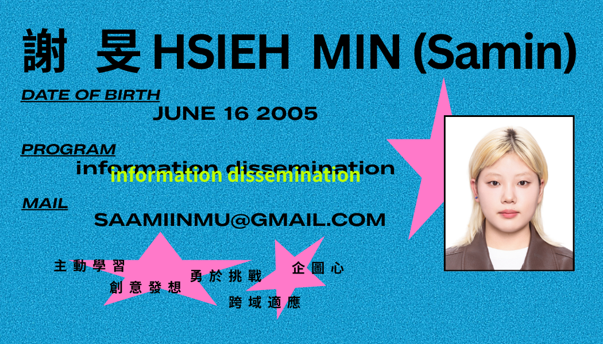
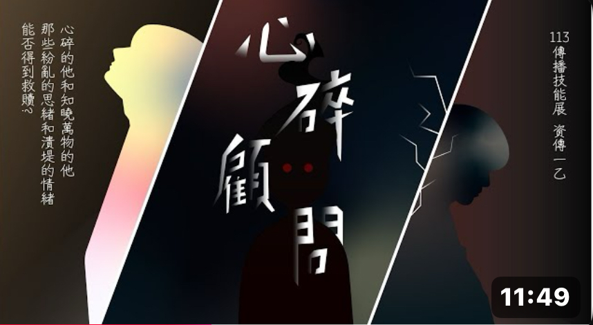
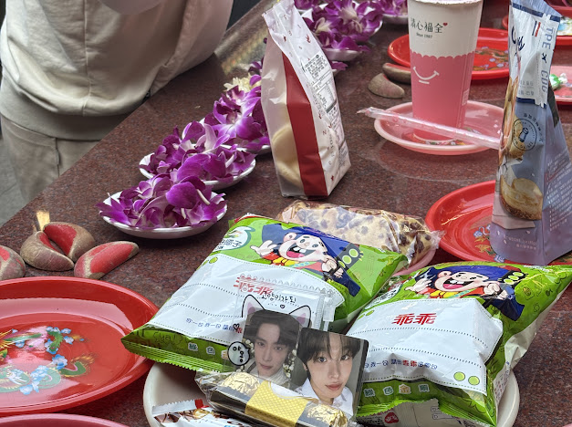
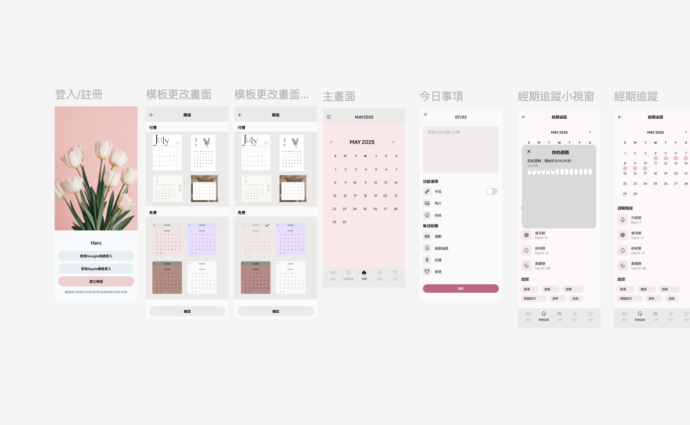
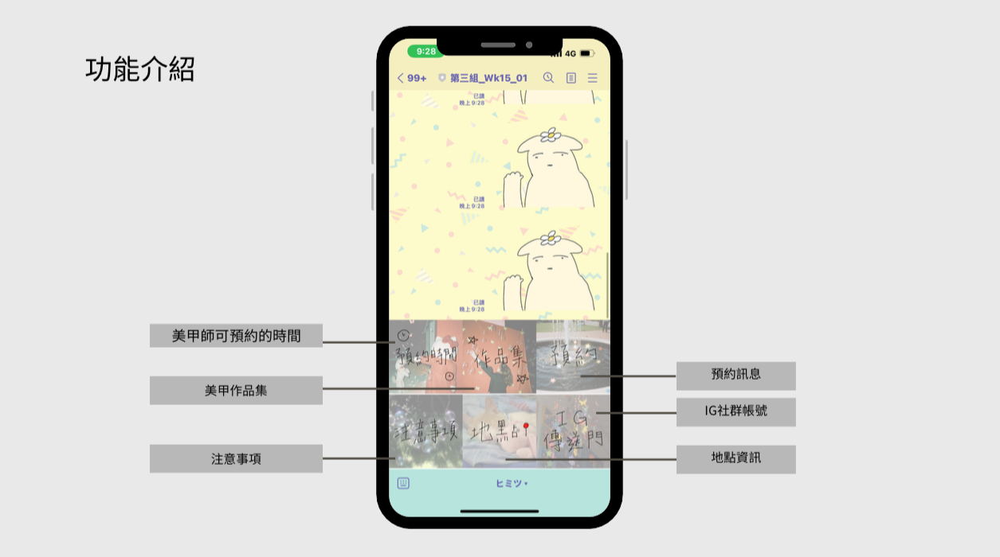
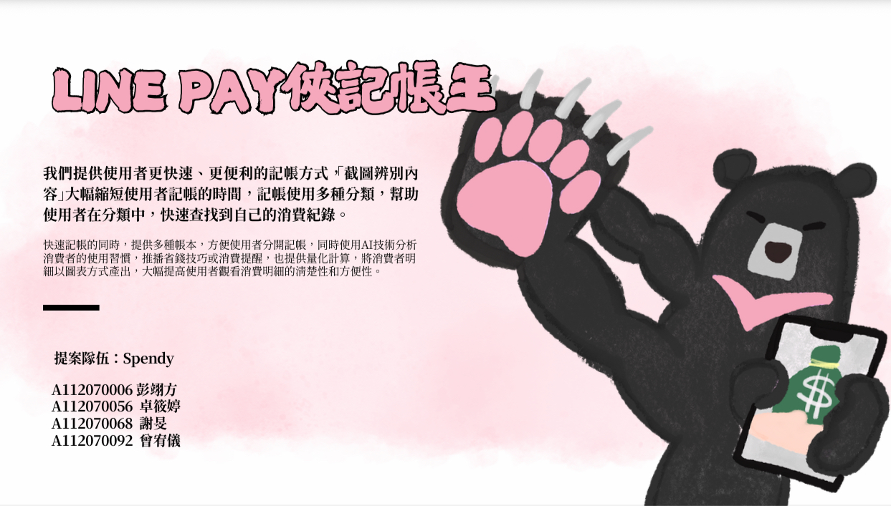
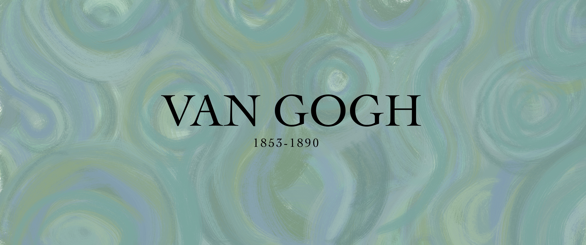

portfolio
Podcast 封面設計
作品說明與設計理念
作品簡述： 為新創自媒體設計的封面logo
使用軟體： Procreate
比賽主視覺
作品說明與設計理念
作品簡述： 為舞蹈比賽活動設計的主視覺
使用軟體： Illustrator
比賽主視覺
作品說明與設計理念
作品簡述：為舞蹈比賽活動設計的主視覺
使用軟體： Procreate
網頁設計
作品說明與設計理念
作品簡述： 服飾網站
使用軟體： html/css/ Bootstrap
品牌logo
作品說明與設計理念
作品簡述： 為新創小眾品牌設計的logo
使用軟體： Procreate
logo設計
作品說明與設計理念
作品簡述： 為舞團Daisuki、charmerco 設計的logo
使用軟體： Procreate
Academic Projects 校內經驗／專題／課堂作品
大一專案

數位內容策展 Over The Bridge
主要負責：視覺總監
簡介：以使用者視角設計敘事導向的內容旅程，設計展覽人物角色運用多媒體與互動線索整合動線與行為引導，讓觀眾在探索中自然理解價值。

傳播技能競賽 心碎顧問
主要負責：剪輯
簡介：第一次使用專業的剪輯工具，學會如何有效分類、同步影像與聲音，建立順暢的剪輯 workflow，熟悉 PR 軟體與格式輸出規範。

數位影音處理 青春定格
主要負責：後製兼場記
簡介：負責鏡頭記錄、進度追蹤與拍攝流程管理。必須與導演、攝影、美術保持一致，確保每一顆素材都能順利接到後期，快速定位、整理與使用。
大二專案

剪輯技巧與敘事 MV
主要負責：攝影
簡介：負責鏡頭運鏡、畫面構圖及燈光安排。提升影像美感與鏡頭掌控能力，學會在拍攝現場與團隊協作、快速解決拍攝現場的即時問題。

質性資料分析研究
主要負責：訪談、編碼與資料分析
簡介：掌握質性研究方法、訪談技巧與資料編碼能力，能從原始資料萃取洞察並整理成研究結論。研究追星族拜月老求票行為之動機與心理意涵。

網站規劃與設計 HARU App
主要負責：視覺設計與 UI 實作
簡介：設計一款針對 20-28 歲女性的生活管理 App，整合日曆、運動等多種功能。增強了使用者體驗設計能力、跨功能整合設計能力。

通識：APP程式設計
主要負責：美甲 Line Bot 程式設計
簡介：課堂作品，運用基礎程式設計概念實作一個美甲 Line Bot。
比賽專欄 (Competition Projects)

ToiLab
負責企劃發想、提案動畫製作
運用智慧感測與 AI 分析改善公廁清潔與管理流程，並整合 LINE 官方帳號提供清 參與使用痛點分析與服務流程構思，提出改善方向，協助規劃提案內容與使用情境，思考如何讓公廁更便利、安全。製作提案動畫，將概念視覺化以提升理解度。學習到問題拆解、服務設計與企劃整合能力。

2025技職盃黑客松競賽 SPENDY
負責專案企劃、介面視覺風格與簡報呈現，確立產品整體定位與調性
以 LINE Pay 使用者為核心，提出以截圖＋OCR 自動辨識金額的記帳流程，改善傳統記帳 App 操作繁瑣的問題。規劃多帳本、自訂分類、快捷啟動等功能，並設計清晰的使用流程與視覺呈現。 參與使用者需求討論，協助規劃更直覺的操作流程，並在可行範圍內提出 UI/UX 改善建議。在多次迭代中練習從使用者角度思考，以提升產品易用性與資訊清晰度。鍛鍊產品構思、資訊視覺化、跨組溝通與提案能力。

青春設計節 網頁設計-梵谷生平
負責網站視覺風格統整、內容架構規劃與協作界面設計
以梵谷為主題打造介紹型網站，包含生平、作品展示與多段式內容呈現。 參與 UI/UX 討論，包括內容資訊架構、頁面閱讀節奏、導覽方式與使用流程調整。依據使用者瀏覽習慣提出版面與互動改善建議，提升內容呈現清晰度與操作流暢度。在限時製作中訓練跨組溝通、協作分工與專案時程管理能力。


{kind=link}
{kind=link}
{kind=link}
{kind=link}
{kind=link}
{kind=link}
{kind=link}
{kind=link}
{kind=link}
{kind=link}
{kind=link}
{kind=link}
{kind=link}
{kind=link}
{kind=link}